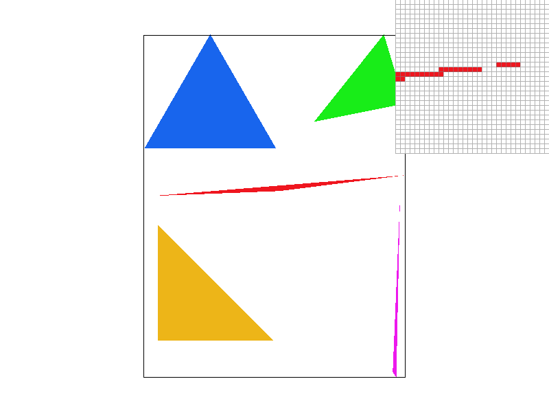
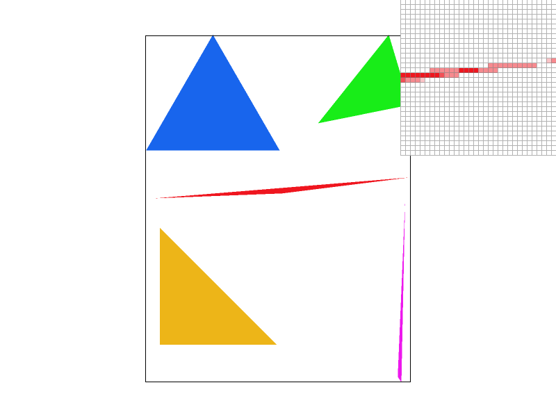
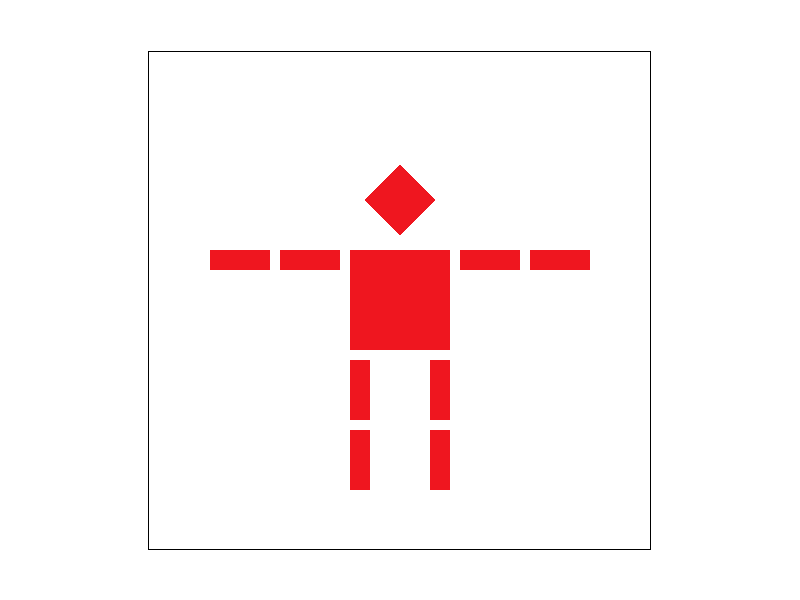
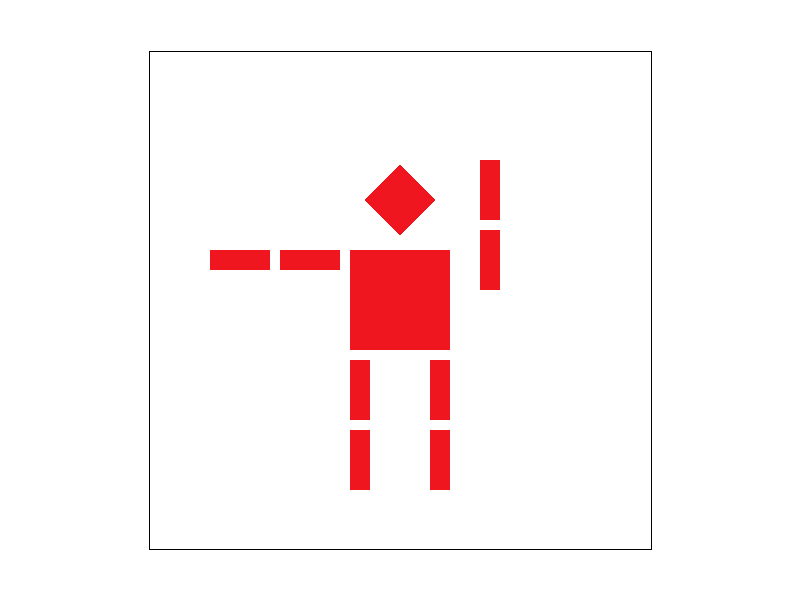
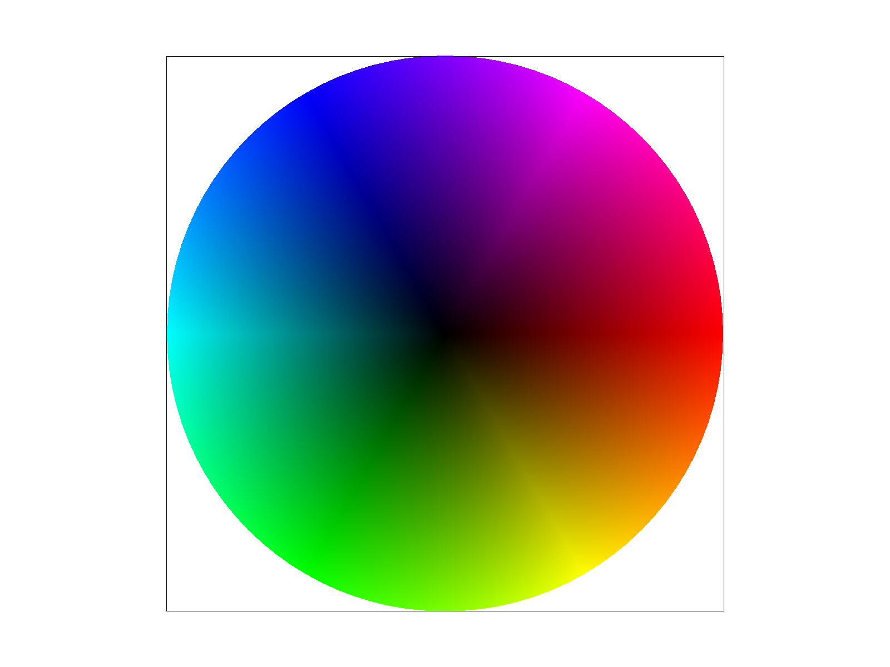
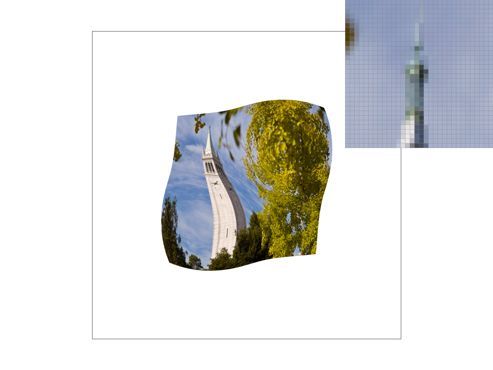
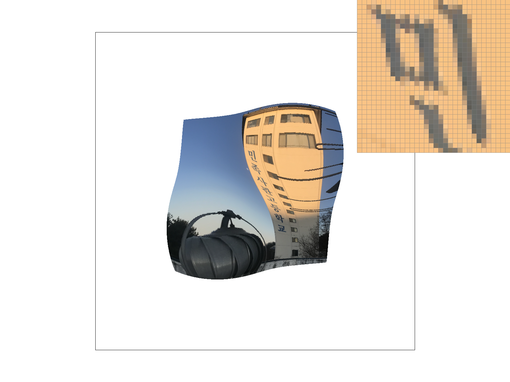
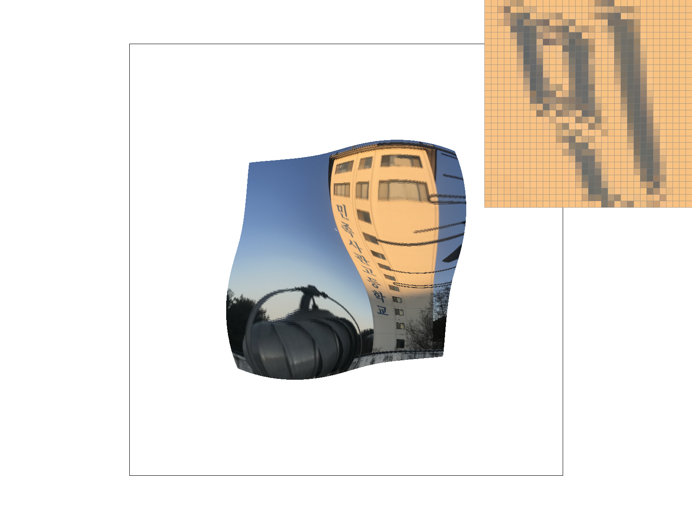

This is a write-up for Homework 1 of CS184/284A Spring 2025.
In this homework, (1) we implemented a simple rasterizer that can draw triangles to draw pictures.(2) We also implemented supersampling to prevent jaggies and improve the quality of the rendered image. Then, we implemented (3) transformations and (4) barycentric coordinates to draw a triangle with a texture. Finally, we implemented (5),(6) mipmapping to improve the quality of the texture mapping.
We use a bounding box algorithm to rasterize the triangle. We compute the bounding box by determining the smallest axis-aligned rectangle that contains the triangle. The bounding box is computed by the minimum and maximum x and y coordinates of the triangle vertices.
After computing the bounding box, we iterate over all the pixels in the bounding box. For each pixel, we check if the pixel is inside the triangle using function is_inside_triangle().
If the pixel is inside the triangle, we color the pixel with the color of the triangle.(fill_pixel()) Here, each pixel is sampled only once at its center (x + 0.5, y + 0.5).
When we define the is_inside_triangle, we have to check for both side of the normal vectors.
For each line vector l-*, we consider two conditions (l_0 >=0 && l_1 >=0 && l_2 >=0) or (l_0 <=0 && l_1 <=0 && l_2 <=0) since the normal vector can be either side of the triangle.
The rasterizer algorithm is in the function rasterize_triangle in rasterizer.cpp.
Our rasterization algorithm is efficient because it only iterates over the pixels in the bounding box of the triangle. This is much faster than iterating over all the pixels in the image. Additionally, we use the bounding box to quickly determine if a pixel is inside the triangle. This reduces the number of computations needed to rasterize the triangle.
To implement supersampling, we define a sample buffer, where the number of subpixels within each pixel is determined by the sample_rate parameter. Each pixel (px, py) is divided into sqrt(sample_rate) x sqrt(sample_rate) subsamples.
We loop through exah subsample and do a point-in-triangle test (is_inside_triangle()). To accurately position the sample points in the sample buffer, we calculate the coordinates using sample_x = px + (i + 0.5f) / sqrt_sample_rate; to ensure the points are correctly centered when locating the pixel. If the subsample is inside the triangle, we store the color in the
On the last part using resolve_to_framebuffer , we simply average the color of the subpixels to get the final color of the pixel.
Supersampling is useful because it reduces aliases such as jaggies. We reduce high frequency artifacts by sampling multiple points within the pixel. This results in a smoother image. Especially, sharp and small tirangles fall between pixel boundaries which can be fixed using Supersampling method. Below in the images, we show some examples with different supersample rates.
|

|

|
|
|
|
This is the original Rasterization Pipeline:
To implement Supersampling, these modifications were made to the rasterization pipeline:
(1) Increase sampling per pixel.
(2) Enlarge the Sample Storage: We use sample_buffer to hold more than one color per pixel.
(3) Add resolve_to_framebuffer() : We do a final pass to average the colors and write them to the framebuffer.
We use a translation matrix (3x3) used in homogeneous coordinates to move the object. The translation matrix is defined as below:
\[ \begin{bmatrix} 1 & 0 & t_x \\ 0 & 1 & t_y \\ 0 & 0 & 1 \end{bmatrix} \]
When multiplying a point (x, y, 1) by this matrix, it moves by (dx, dy), resulting in (x + dx, y + dy, 1).
We use a scale matrix (3x3) used in homogeneous coordinates to scale the object. The scale matrix is defined as below:
\[ \begin{bmatrix} s_x & 0 & 0 \\ 0 & s_y & 0 \\ 0 & 0 & 1 \end{bmatrix} \]
When multiplying a point (x, y, 1) by this matrix, it scales by (sx, sy), resulting in (sx * x, sy * y, 1).
We use a rotation matrix (3x3) used in homogeneous coordinates to rotate the object. The rotation matrix is defined as below:
\[ \begin{bmatrix} cos(\theta) & -sin(\theta) & 0 \\ sin(\theta) & cos(\theta) & 0 \\ 0 & 0 & 1 \end{bmatrix} \]
When multiplying a point (x, y, 1) by this matrix, it rotates by \(\theta\) degrees, resulting in (x', y', 1).
In this example, it is essential to consider the concept of hierarchical transformation since when the parts of the body of the robot does not work independently. We use a parent-child relationship when we apply the change.
The child transformation depends on the parent's transformation, which the order of transformation always follows a matrix stack approach, which applies transformation in a hierarchical order.
Below, we draw a red robot and give some rotational changes on its left arm.
|

|

|
Here in our robot, we changed the second segment of the arm to point downwards to make it hold its hand as shown in the picture.
Barycentric coordinates are a way to describe the position of a point relative to the corners of a triangle. Instead of using standard (x, y) coordinates, they express the point as a mix of the triangle’s three vertices, like a weighted average. The weight coefficients tell us how much influence each vertex has, if they all add up to 1 and are non-negative, the point is inside the triangle; otherwise, it is outside of the triangle.
In our rasterize_interpolated_color_triangle function, we use these barycentric weights to rasterize the triangles’ colors based off of the three colors of each vertex of the triangle. We compute the weights, so called alpha, beta, and gamma, by taking the ratio of the area of a triangle between the sample point and two vertices to the total area of the triangle. By doing so, we are able to compute the color based on the weights by taking color0 * alpha + color1 * beta + color2 * gamma.
|

|
In the image above, the triangles in the circle are all rasterized based on the barycentric interpolation colors. The reason the colors vary as a gradation is because every triangle is rasterized with the colors computed with the barycentric interpolation of the three vertices.
Texture mapping involves wrapping a 2D image onto a 3D surface by mapping texture coordinates (UV coordinates) to object coordinates. Since textures do not always align perfectly with the screen’s pixel grid, pixel sampling determines how the texture is read and displayed at each pixel. In the rasterize_textured_triangle function, we set every sample point’s barycentric differentials of the uv coordinates and pass them into the sample parameters. Then, we invoke the sample function that samples the pixels depending on the sampling methods. Here, we have two sampling functions: sample_nearest and sample_bilinear.
Nearest Neighbors sampling selects the nearest texture pixel (texel) of the uv coordinate of the sample point. In the sample_nearest function, it returns the color of the texel that is closest to the uv coordinate.
|
|

|
Bilinear Interpolation takes the four adjacent texels of the uv coordinate and operates linear interpolation within the two pairs of the texel colors. Then, it takes another linear interpolation between the resultant colors of the two texel pairs. That color is the final bilinear interpolated color of the sample point. In the sample_bilinear function, we retrieve four adjacent texels with respect to the uv coordinate computed based on the sample point, and then take a total 3 lerps between the texels.
|
|
|
Level sampling is a method in texture mapping that helps control how textures look when objects are viewed from different distances. When a 3D object is far away, its texture can appear overly detailed for the number of pixels available on the screen, leading to visual issues like jagged edges or flickering. To prevent this, level sampling selects from a set of pre-scaled texture versions, known as mipmaps, which are lower-resolution copies of the original texture designed to match the viewing distance more effectively.
In the sample function, we first determine the level computed by the get_level function passed by an argument of SampleParams. Here, we use the following equation: \[ level = log2(max(abs(sp.p_dx_uv - sp.p_uv), abs(sp.p_dy_uv - sp.p_uv))) \] The sampling method is determined by the P command between P_NEAREST and P_LINEAR. For the level sampling, the L command determines which level sampling method to incorporate with: zero level, nearest level, and bilinear level samplings.
Zero level sampling merely passes in a level of 0 to the sampling method.
|
|

|
Nearest level sampling passes in a level that is rounded to the nearest integer. The logarithmic float value will be rounded up or down based on the precision. We use the nearest level as its level sampling.
|
|
|
Bilinear level sampling computes both samples with level of floor(level) and ceil(level). Then, we operate linear interpolations between the colors acquired from sampling the texels. Lastly, we do another linear interpolation (lerp) on the colors generated by the two sampling methods with two different levels. For bilinear level and bilinear sampling, also known as Trilinear Sampling, we do bilinear interpolation twice, which means there are 8 texels read. Also, there are total 7 linear interpolations computed.
|
|

|
Speed
Zero level sampling is the fastest since it always grabs the highest-resolution texture, but this can slow things down when rendering distant objects.
Nearest level sampling is a bit slower because it picks the closest mipmap level, reducing unnecessary detail.
Bilinear level sampling is the slowest since it blends between two mipmap levels, making textures look smoother but requiring more processing.
Memory Usage
Zero level sampling uses the least memory since it only stores the original texture.
Nearest level sampling needs more storage for mipmaps, but they help optimize performance.
Bilinear level sampling takes up the most memory because it accesses multiple mipmaps at once to smooth transitions.
Antialiasing Power
Zero level sampling has the worst antialiasing, leading to jagged textures and shimmering.
Nearest level sampling helps by using mipmaps, though it can cause sudden texture shifts.
Bilinear level sampling is the best at reducing aliasing, blending mipmap levels for a smoother, more natural look.